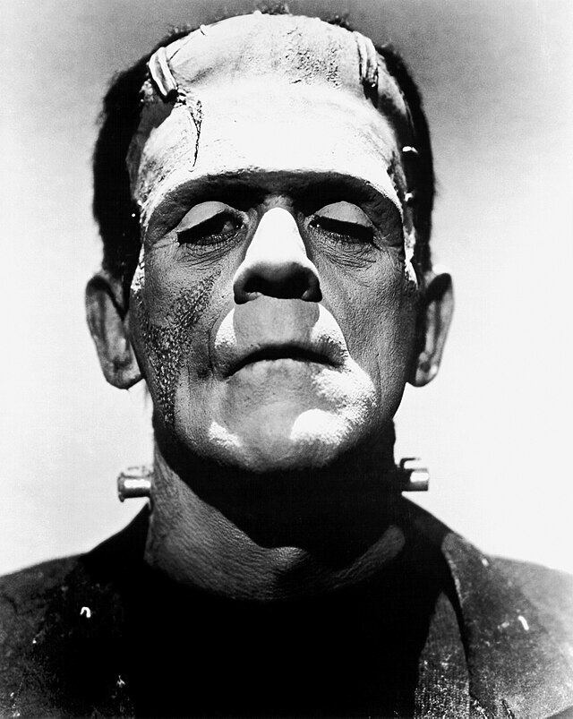
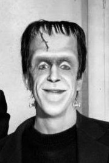

Literature
Ron English, Popaganda: The Art & Subversion of Ron English (San Francisco: Last Gasp, 2001), p. 79. ISBN 1-887128-60-3.
Notes
This work references Boris Karloff as Frankenstein’s monster.

This work also references Herman Munster from The Munsters.

Additional Online Circulation
This work appears in “Artist Ron English, The Man Behind Abraham Obama, is King of Art Flip,” Loyal K.N.G., February 21, 2009, available here.